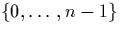

Vectors are another datatype indexed by nat but this time vect A n is the collection of lists of length n, with elements in A. With this datatype we can define the (family of) total functions ``nth'' for any natural number n which take an element of the finite set  and a list of length n and returns the appropriate element of the list. In this file we prove that the ``nth'' function defined here is equivalent (modulo the appropriate conversions) to the ``nth'' function in the list library.
As with lists, older versions of the library have the element type parameter explicit throughout. Now, with conditional visibility, the parameter is explicit for vect and vnil, but implicit for vcons and vect_elim. This may necessitate small changes to existing proof scripts.
** Module lib_vectors Imports lib_finite lib_list_length
$vect : (Type)->nat->Type(vect)
$vnil : {A:Type}vect A zero
$vcons : {A|Type}A->{n|nat}(vect A n)->vect A (suc n)
$vect_elim :
{A|Type}{C_vect:{n|nat}(vect A n)->Type}(C_vect (vnil A))->
({a:A}{n|nat}{v:vect A n}(C_vect v)->C_vect (vcons a v))->{n|nat}
{z:vect A n}C_vect z
** Label (!vect!) vect
** Label (!vect elim!) vect_elim
** Label (!vect vnil!) vnil
** Label (!vect vcons!) vcons
[[A|Type][C_vect:{n|nat}(vect A n)->Type][f_vnil:C_vect (vnil A)]
[f_vcons:{a:A}{n|nat}{v:vect A n}(C_vect v)->C_vect (vcons a v)][a:A]
[n|nat][v:vect A n]
vect_elim C_vect f_vnil f_vcons (vnil A) ==> f_vnil
|| vect_elim C_vect f_vnil f_vcons (vcons a v) ==>
f_vcons a v (vect_elim C_vect f_vnil f_vcons v)]
vect_elim_ne = ... :
{A|Type}{C:{n|nat}(vect A (suc n))->Type}
({a:A}{n|nat}{v:vect A n}C (vcons a v))->{n|nat}{v:vect A (suc n)}
C v
vect_elim'_lemma = ... :
{A|Type}{n:nat}{m:vect A (suc n)}{P:(vect A (suc n))->Type}
({a:A}{m'6:vect A n}P (vcons a m'6))->P m
vect_rec = ... :
{A|Type}{C|Type}C->(A->{n|nat}(vect A n)->C->C)->{n|nat}(vect A n)->
C
vect_iter = ... :
{A|Type}{C|Type}C->(nat->A->C->C)->{n|nat}(vect A n)->C
vect_ind = ... :
{A|Type}{P:{n:nat}(vect A n)->Prop}(P (vnil A))->
({a:A}{n|nat}{v:vect A n}(P v)->P (vcons a v))->{n|nat}{z:vect A n}
P z
vnil_lemma = ... :
{A|Type}{n:nat}{v:vect A n}
nat_elim|([x:nat](vect A x)->Prop)
([v'4:vect A zero]Eq v'4 (vnil A))
([x:nat][_:(vect A x)->Prop][_:vect A (suc x)]trueProp) n v
vect_zero_eq_vnil = ... : {A|Type}{v:vect A zero}Eq v (vnil A)
vect_head = ... : {A|Type}{n|nat}(vect A (suc n))->A
vect_tail = ... : {A|Type}{n|nat}(vect A (suc n))->vect A n
cons_inj_lemma1 = ... :
{A|Type}{a,b:A}{n:nat}{v:vect A n}(Eq (vcons a v) (vcons b v))->
Eq a b
cons_inj_lemma2 = ... :
{A|Type}{a:A}{n:nat}{v,w:vect A n}(Eq (vcons a v) (vcons a w))->
Eq v w
vect_head_cons_tail = ... :
{A|Type}{n|nat}{v:vect A (suc n)}
Eq (vcons (vect_head v) (vect_tail v)) v
vect_nth = ... : {A|Type}{n|nat}(fin n)->(vect A n)->A
vect_update = ... : {A|Type}{n|nat}(fin n)->(vect A n)->A->vect A n
vect_character = ... :
{A:Type}
[vect_character_rhs=nat_elim ([n:nat](vect A n)->vect A n)
([_:vect A zero]vnil A)
([x1:nat][_:(vect A x1)->vect A x1]
[v:vect A (suc x1)]
vcons (vect_head v) (vect_tail v))]{n|nat}
{v:vect A n}Eq v (vect_character_rhs n v)
vect_zip = ... :
{A|Type}{n:nat}(A->A->A)->(vect A n)->(vect A n)->vect A n
vector_to_list = ... : {A|Type}{n|nat}(vect A n)->list A
vector_to_list_resp_cons = ... :
{A|Type}{n|nat}{v:vect A n}{a:A}
Eq (cons|A a (vector_to_list v)) (vector_to_list (vcons a v))
vect_nth_equiv_nth = ... :
{A|Type}{n|nat}{x:fin n}{v:vect A n}{a:A}
Eq (vect_nth x v) (nth (fin_to_nat x) (vector_to_list v) a)